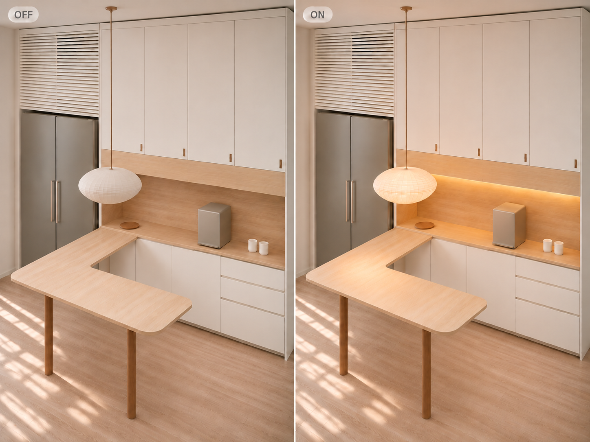
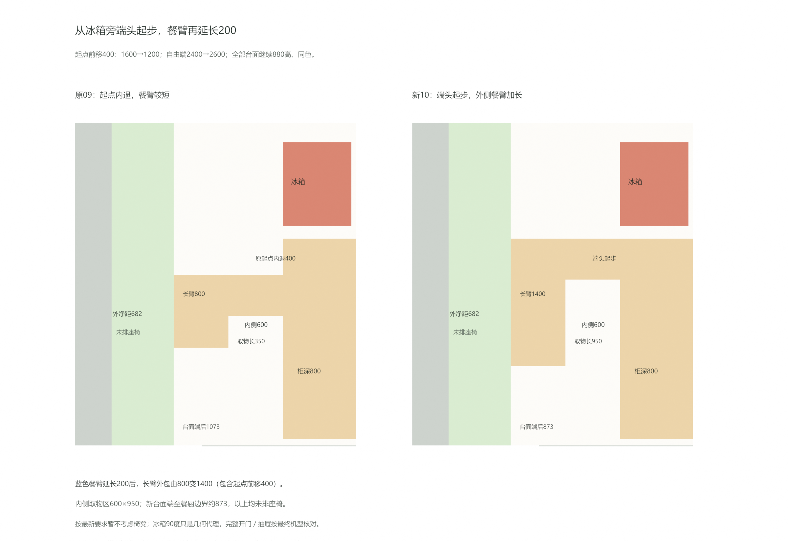
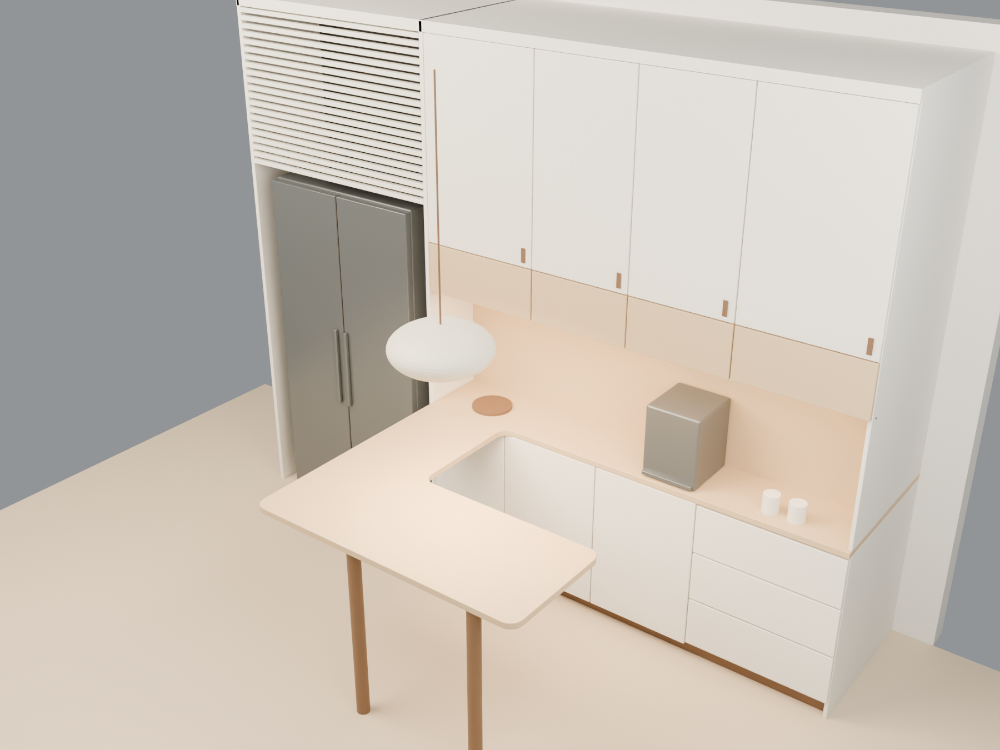
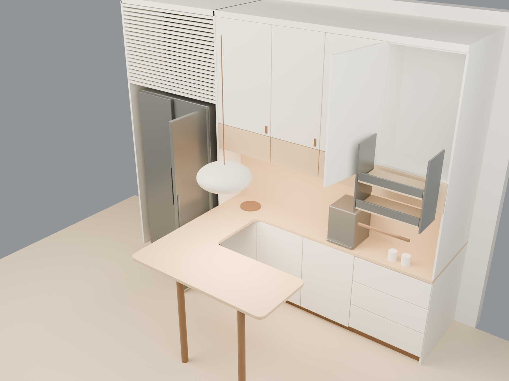

独立方案10 · 2026-11-06 · 暂不排椅凳
从冰箱旁端头直接伸出
外侧餐臂再延长200 mm
把原来内退400的连接起点移到红框所指的柜段端头，取消那一小段先向里走再转出的台面。蓝色餐臂的自由端再向厨房方向延长200，U形的内侧空间随之变长。全部台面继续同色、同高880。
按最新要求，本轮先不考虑凳子，只研究柜体与台面形态。图中椅凳全部暂时隐藏，不代表取消三人用餐需求，也不把“两椅一凳”的试排坐标作为定案。主模型v19和原家具、VR保持，未启动v20。
只看柜体和台面：全关灯／全开灯

这次具体改了多少
| 项目 | 原09 | 新10 |
|---|---|---|
| 连接臂起点，沿墙局部坐标 | 1600 | 1200：向冰箱端移400，与柜段端头齐 |
| 餐臂自由端，沿墙局部坐标 | 2400 | 2600：向厨房延长200 |
| 外侧餐臂总长×宽 | 800×600 | 1400×600，包含起点前移带来的400 |
| 连接臂柜外伸出×宽 | 1200×450 | 1200×450 |
| 内侧闭门取物区 | 宽600×长350 | 宽600×长950 |
| 沿墙柜段 | 长2200×深800×总高2750 | 保持 |
| 台面 | 高880、厚30、浅木色 | 保持连续U形与柔和圆角 |
| 台面端至餐厨边界，未排座椅 | 1072.5 | 872.5 |
| 外侧家具净距，未排座椅 | 682 | 682 |
单位mm。起点和自由端坐标只用于独立方案的版本比对，原点位于当前柜段研究的客厅端；数据仍来自暂拟模型，不是实测放样。

保留的柜体与风格
红框处仍是连续开放置物带，背板、操作台、薄翻门和餐岛统一浅木色，上下柜为暖白实门。四扇完整上柜及下拉收纳思路继续沿用，不再增加独立高位小柜；三排横抽、整段灯带和柜面与冰箱门面齐平的关系保持。
支撑改为两根细圆木腿和台面下的隐藏连接，给加长餐臂留出干净轮廓。图中圆腿为形态与支承位置意向，台面基层、钢件与固定方式须在施工深化时落实。
同版原生实体参考

当前核对范围
- 已保存并重开独立模型，核对新起点、2600自由端、880台面、连续封闭网格及当前零可见椅凳；主模型五项基线不变。
- 额外做了冰箱右门90度的几何代理试排。它只说明该简化姿态与台面没有重叠，不表示实际冰箱的大角度开门、抽屉取出或散热安装已通过。
- 具体椅凳、坐下起身和用餐时的通道留到后续再排；本图的682、872.5均不能直接当成有人就座后的净空。
- 高柜下拉真实行程、转角附近侧向取物、柜门开启及固定支承仍需按产品与现场尺寸深化。
冰箱右门90度与上柜下拉的几何演示
